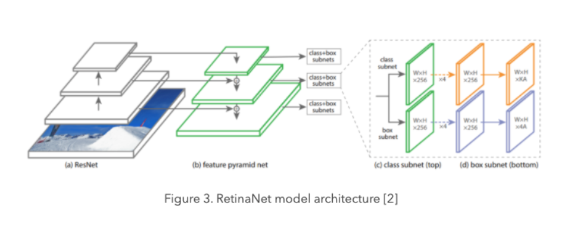

Object Detection
RetiaNet
Object detection model
RetinaNethas been formed by making two improvements over existing single stage object detection models - Feature Pyramid Networks and Focal Loss.

Feature Pyramid Network
Feature image pyramids used to detect objects with varying scales in an image.
In feature image pyramids, we take an input image and subsample it into lower resolution and smaller size images
With the advancements of deep learning, we now use the pyramidal hierarchical structure with CNNs.
In a CNN architecture, the output size of feature maps decreases after each successive block of convolutional operations, and forms a pyramidal structure.
Focal Loss
Focal Loss is an enhancement over Cross-Entropy Loss and is introduced to handle the class imbalance problem with single-stage object detection models.
Single Stage models suffer from a extreme foreground-background class imbalance problem due to dense sampling of anchor boxes
Focal Loss reduces the loss contribution from easy examples and increases the importance of correcting misclassified examples.
Advantage
Highest accuracy object detectors to date are based on a two-stage approach popularized by R-CNN
Surpassing the accuracy of all existing state-of-the-art two-stage detector
UNETs
UNet is a fully convolutional network (FCN) used for image segmentation. The goal is to predict each pixel’s class in an image.
Architecture
Three Main Components):
Encoder or Downsampling Path
Bottleneck
Decoder or Upsampling Path
Downsampling Path:
Consists of two convolution layers each followed by a ReLU activation function and a 2x2 max pooling operation for
downsampling.At each
downsamplingstep we double the number of feature channels
Bottleneck:
part of the network is between the contracting and expanding paths. The bottleneck is built from 2 convolutional layers (with batch normalization) and with dropout.
Upsampling Path:
Every step in the decoder path consists of an
upsamplingof the feature map followed by a 2x2 convolution, a concatenation with the corresponding feature map from thedownsamplingpath, and two convolutions layers, each followed by a ReLU.
Final Layer:
A 1x1 convolution is used to map each feature vector to the desired number of classes.
Loss function:
The energy function is computed by a pixel-wise softmax over the final feature map and then applied cross-entropy loss function.
Metric:
IoU (intersection of union)-> Area overlap / Area of Union
Comments:
Means converting a high resolution image to a low resolution image. By down sampling, the model better understands
Whatis present in the image, but it loses the information ofWhereit is present.
Advantages:
UNet combines the location information from the downsampling path to finally obtain a general information combining localisation and context, which is necessary to predict a good segmentation map.